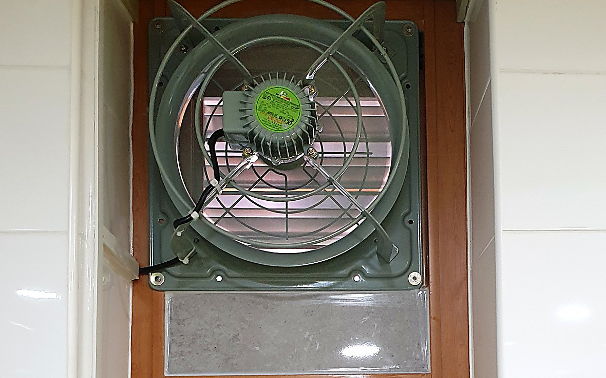
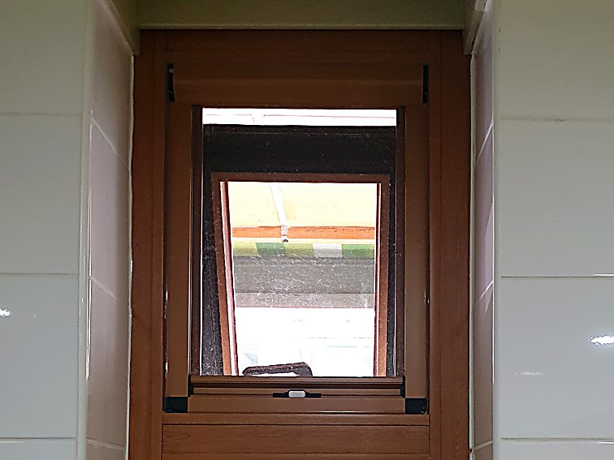
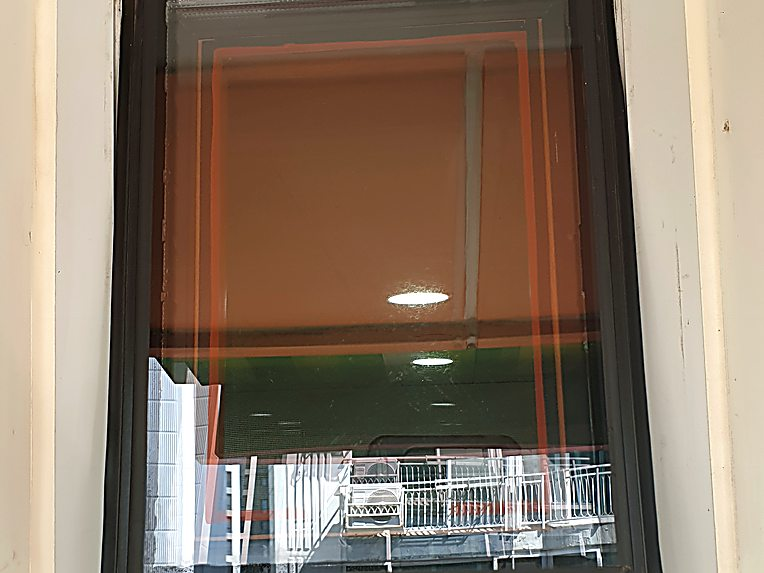
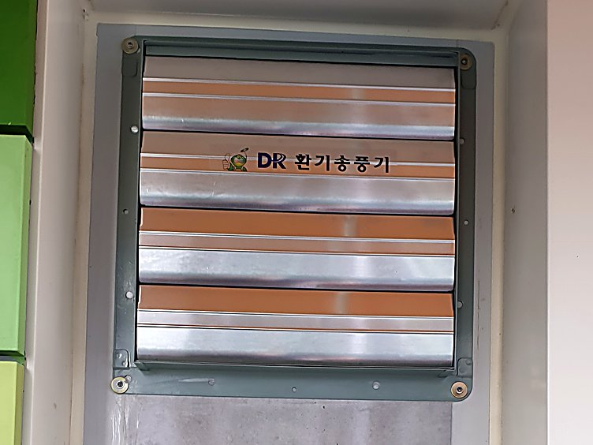
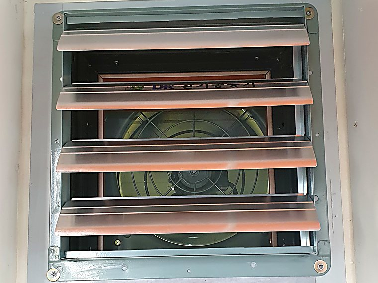
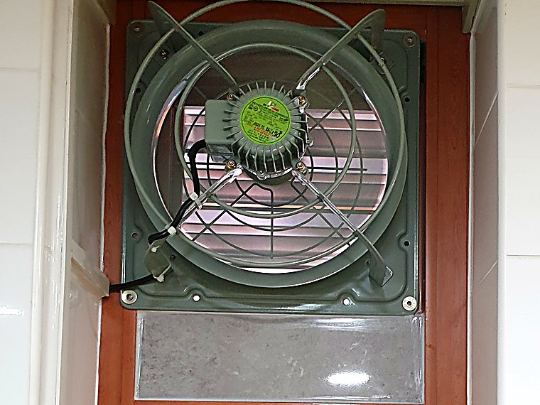

수원 어린이집 화장실 환풍기 설치 — 저소음 고압환풍기와 셔터형 덮개, 1명 3시간
수원의 어린이집 화장실입니다. 흔히 다는 백색 플라스틱 환풍기로는 냄새와 열기를 바로 빼기 어려운 자리라 저소음 고압환풍기를 넣었습니다. 바깥에는 돌 때만 열리는 셔터형 덮개를 달아 벌레와 이물질을 막고, 남는 공간은 마감판으로 정리했습니다. 1명이 3시간 만에 마쳤습니다.
- 현장
- 어린이집 화장실
- 시공 내용
- 저소음 고압환풍기 설치 · 셔터형 덮개 · 마감판
- 소요 시간
- 1명 · 3시간
- 지역
- 경기 수원

설치 완료 — 창 상부의 환풍기와 아래 마감판
시공 전 현장 상태
- 어린이집 화장실 — 아이들이 연달아 쓰는 공간
- 창은 위아래 두 칸, 위 칸만 젖혀 열리는 구조
- 창을 열어두는 것 말고는 냄새와 습기를 뺄 방법이 없었음
- 흔히 다는 백색 플라스틱 환풍기로는 힘이 부족한 조건
- 환풍기를 달면 바깥으로 구멍이 생겨 벌레 유입이 걱정되던 자리

실내 · 시공 전
외부 · 시공 전어린이집 화장실은 약한 환풍기로 감당이 안 됩니다
가정집 화장실은 한 사람이 쓰고 천천히 빠져도 됩니다. 어린이집은 여러 아이가 연달아 쓰고 냄새와 습기가 쉴 틈 없이 쌓입니다. 쌓이는 속도보다 빼는 속도가 빨라야 하는 곳입니다.
백색 플라스틱 환풍기는 날개가 작고 힘이 약합니다. 바깥까지 밀어내려면 저항을 이겨야 하는데 그 힘이 부족해서, 소리는 나는데 냄새는 남는 상태가 됩니다.
그래서 저소음 고압환풍기를 골랐습니다. 밀어내는 힘은 살리고 소음은 낮춘 제품입니다. 아이들이 있는 공간이라 힘과 소음을 둘 다 봐야 했습니다.
환풍기만 달면 구멍이 하나 생기는 겁니다
환풍기가 안 돌 때 그 자리는 바깥으로 뚫린 구멍입니다. 벌레와 찬바람이 들어오고 바깥 냄새가 거꾸로 들어옵니다. 어린이집이라 특히 신경 쓰였습니다.
그래서 바깥쪽에 셔터형 덮개를 달았습니다. 돌면 바람 힘으로 열리고 멈추면 날개 무게로 닫힙니다. 전기가 없어 고장 날 부분도 없습니다.

멈춤 · 닫힘
가동 · 열림작업 순서
- 위 칸 창을 떼어내고 개구부를 정리했습니다.
- 개구부를 실측해 환풍기 규격과 맞췄습니다.
- 본체를 물려 사방을 고정하고, 남는 공간은 마감판으로 막았습니다.
- 바깥쪽에 셔터형 덮개를 달았습니다. 돌면 열리고 멈추면 닫히는지 확인했습니다.
- 전원을 연결하고 배선을 정리했습니다.
- 가동해서 배출 흐름·소음·셔터 개폐를 확인하고 마쳤습니다.
작업 결과
- 창 상부에 저소음 고압환풍기가 들어감
- 돌 때만 열리는 셔터형 덮개로 벌레·이물질 차단
- 남는 공간은 마감판으로 막아 틈 없이 마무리
- 아래쪽 유리창은 그대로 살림
- 수원, 1명 3시간 작업으로 당일 마무리했습니다

시공 후위 칸 창 자리에 환풍기를 넣고 남는 공간은 마감판으로 막았습니다
자주 묻는 질문
어린이집인데 소리가 크지 않나요?
일반 산업용보다 소음을 낮춘 저소음형입니다. 다만 완전히 조용한 제품은 없어서, 아이들이 없는 시간에 강하게 돌리는 방식으로 안내드렸습니다.
바깥 셔터는 전기로 여닫는 건가요?
아닙니다. 돌면 바람 힘으로 열리고 멈추면 날개 무게로 닫힙니다. 전기도 배선도 없어 고장 날 부분이 거의 없습니다.
창문은 어떻게 되나요?
위쪽에 열리던 창 자리에 환풍기를 넣고, 아래쪽 유리창은 그대로 뒀습니다. 환풍기와 창틀 사이 남는 공간은 마감판으로 막아 틈이 없습니다.
환풍기 하나로 화장실 냄새가 잡히나요?
나가는 만큼 들어올 공기가 있어야 합니다. 어린이집 화장실은 문이 자주 열려 대개 충분합니다. 꼭 닫아두는 구조면 급기를 따로 봅니다.
세 줄 요약
- 증상
- 어린이집 화장실에 냄새와 습기가 쌓이는데 창을 여는 것 말고는 뺄 방법이 없었습니다.
- 원인
- 여러 아이가 연달아 쓰는 곳이라 플라스틱 환풍기의 힘으로는 쌓이는 속도를 못 따라갑니다.
- 조치
- 창 상부에 저소음 고압환풍기를 넣고 바깥에 셔터형 덮개를 달아 수원에서 1명이 3시간 만에 마무리했습니다.